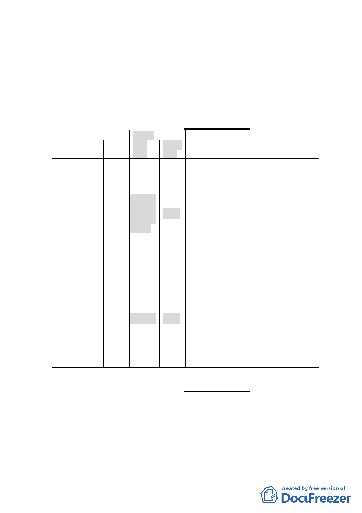

3. 為兼顧水土、生態景觀資源及公共安全，周圍山坡地宜維
持現有自然狀態，不作開發與破壞，並運用指南山莊自然
資源結合現有老樹劃設生態景觀區，以開放式校園規劃，
提供師生及社區居民使用。
四、計畫內容概述：（原公展主、細計概要）
（一） 土地使用分區變更：（原公展主計 P23）
變更
位置
原計畫
使 用 面積
分區 (ha)
新計畫
使用
分區
面 積 變更理由
(ha)
1.軍事用地檢討釋出後，可提供本地區
都市活化的機會，促進高等教育的發
展及解決政治大學校地不足的問題，
大專用
地(國
立政治
8.61
大學)
未來配合政大大學城的規劃，提供地
區再發展的機會。
2.本基地中央夾雜一塊坡度50％以上的
山丘地，因該山丘地出入皆須通過本
基地，不利單獨使用，基於整體規劃
指南
山莊
用機地關11.04
考量，將該山丘地一併變更為大專用
地。
1.本計畫區東、東南及南側地區之山坡
地，在國防部管理期間，因考量軍事
用地特殊需求，變更為機關用地，土
地所有權人權益受到限制；
保護區 2.43 2.本案都市計畫變更，建議依其原有使
用狀況重新劃定適當土地使用分區，
因該區土地坡度多為超過30％以上的
四至六級坡，考量水土保持及公共安
全，變更為保護區。
（二） 土地使用分區管制：（原公展細計 P11）
1. 為保持本基地良好自然資源與景觀，原屬機關用地(建蔽率：
40％、容積率：400％）變更為大專用地後，比照政治大學校
區，建蔽率為40％、容積率為240％，降低原計畫容積，以融
合周邊地景方式進行開發，減少對環境之衝擊。
2. 另基地中央夾雜一塊坡度50％以上的山丘地，因該山丘地出
-3-